What is Salesforce?

- Company
- Best and most used CRM
- Great cloud platform for Web Development
One can compare Salesforce to Amazon.
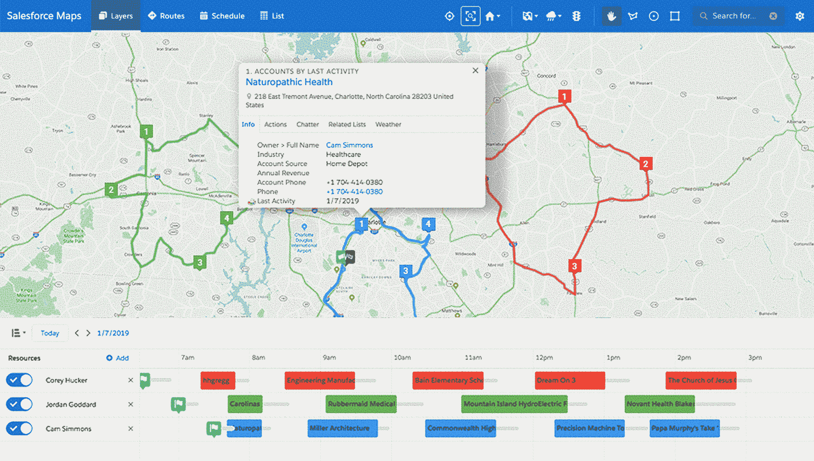
Sergey Rusetsky,
Master of Science in GIS,
Salesforce Developer at VRP Consulting
One can compare Salesforce to Amazon.
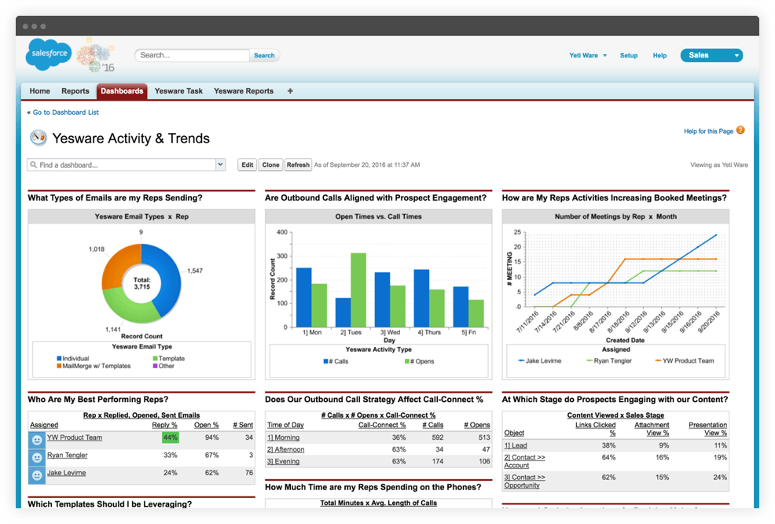
What is a platform?
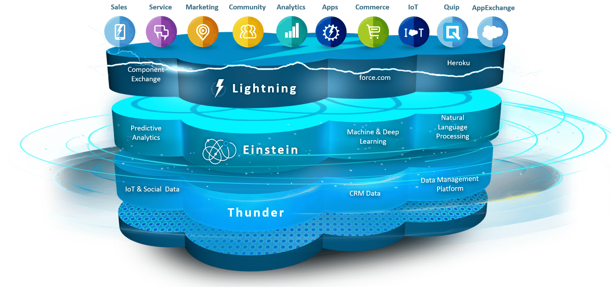
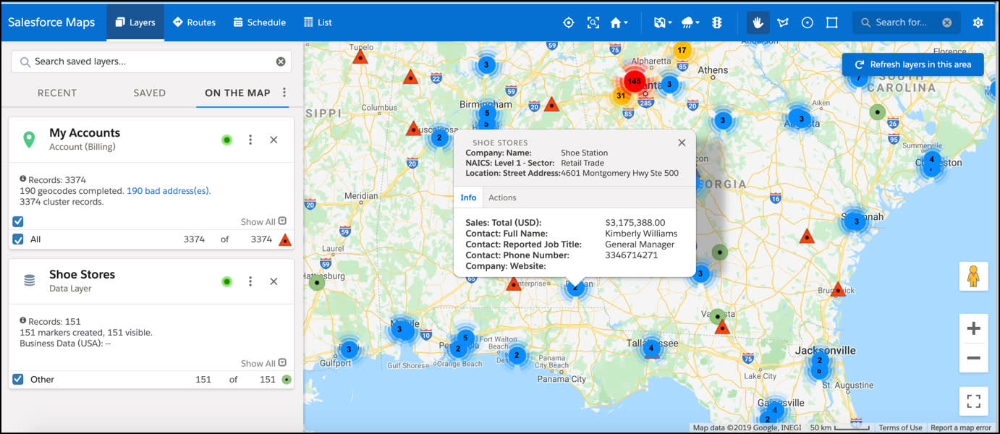
But spatial data are so important by its nature,
that Salesforce has several important buid in features
for work with spatial data.
They are:
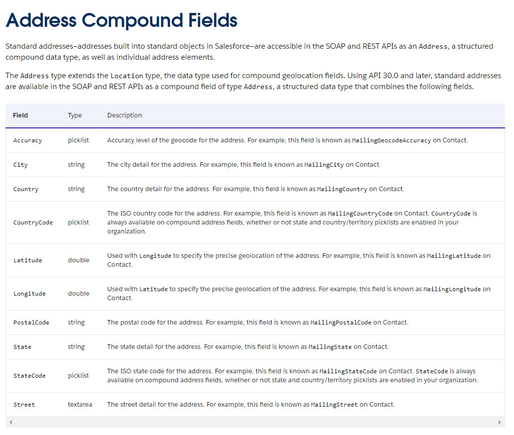
Note1: for some reason it is not normalized.
Note2: compound field type.
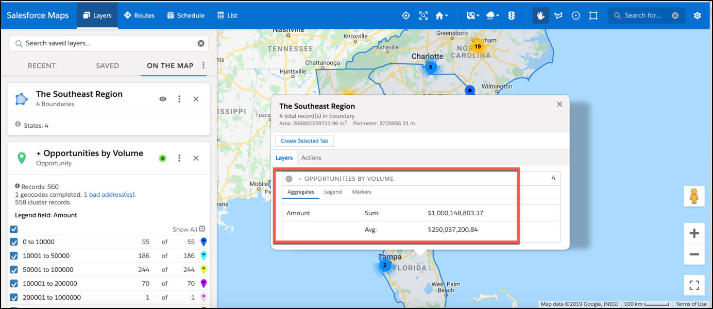
Salesforce Maps - is additional platform feature (separate licence is needed).
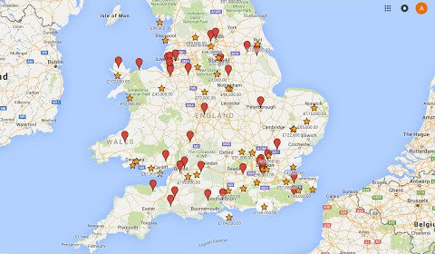
Previously Salesforce maps was wrapper on Google Maps.
So new maps, based on ESRI procuct were integrated.
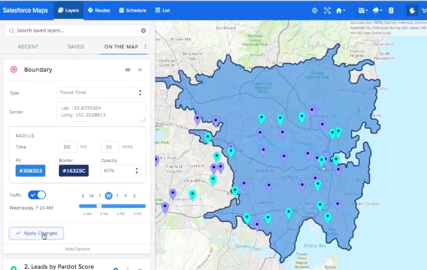
Salesforce allows to impmement any web-project.
Of course many of them are CRM related.
Personally, during my almost 5-year Experience in Salesforce, I've contributed to nearly dozen of projects.
Two of them were a bit related to using spatial data.
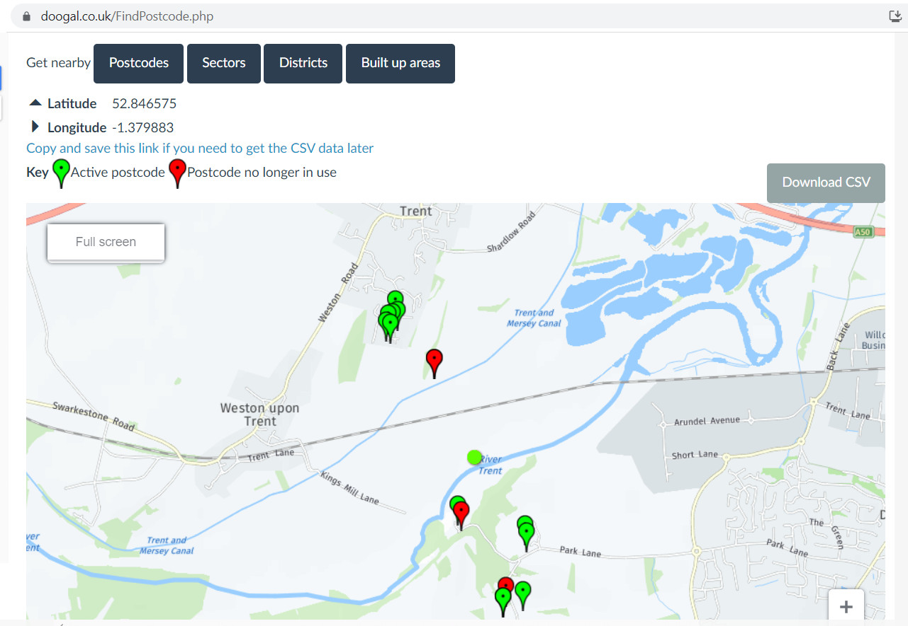
Nice example of British business: Privately owned. Opensource data. Profitable.
Notes (general knowledge):
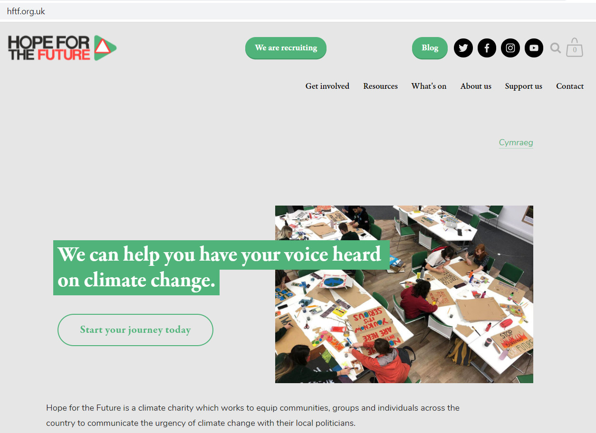
Postcodes. Task and Implementation details.
Note about site build using SF feature.
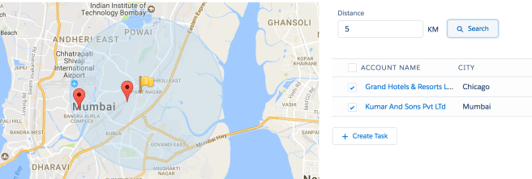
One of features: ranking, where distance was one of factors.
Note for future devs - nice task:
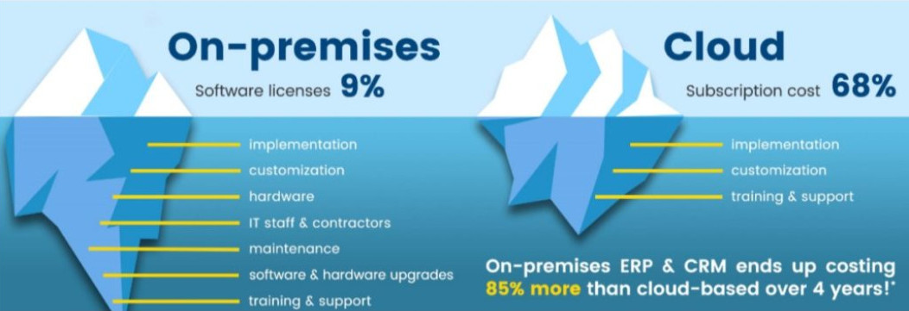
Some details for ones, who knows programming, at least alrady taken cource "GIS-programming".

All possiblitites for Development
And that's why platform is great for the newcomers:
Learning curve is not steep.
Ask auditory: Why?
Salesforce saw a 38% rise in its jobs listings from 2020-2021 and 4.2M jobs will be created in the Salesforce ecosystem by 2024.
Note: Salesforce as platform can count on developer job, compare to other platforms.
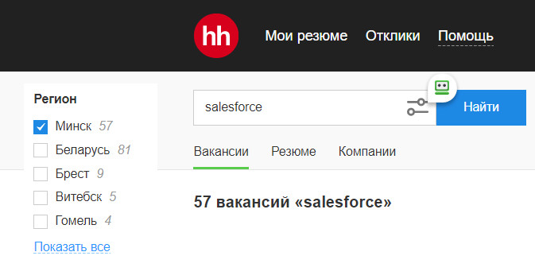
Link to the Next Presentation.